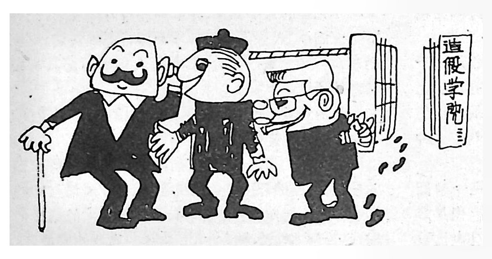

佚名 《人事》1990年第11期（总第62期），第40页
造假学院招生简章（题图）
Admissions Prospectus of the College of Forgery (header drawing)
- Text in the drawing
- 造假学院
College of Forgery - Passage illustrated
3.假证系：凡能制造让一部分人有恃无恐，肆意横行的假身份证、假户口簿、假文凭、假党表、假发票、假许可证、假合格证等，致政治和经济生活中的许多凭据于真假难辨之中，使朱红大印失去可信度者，均可入选。
3. Department of Fake Certificates: anyone who can produce fake identity cards, fake household registers, fake diplomas, fake Party membership forms, fake invoices, fake permits and fake quality certificates — enabling some people to run amok without fear, leaving the documents of political and economic life impossible to tell true from false, and robbing the vermilion official seal of its credibility — is eligible.From the satirical piece 造假学院招生简章 (“Admissions Prospectus of the College of Forgery”) by Yu Yongjun, on the same page. 于永军《造假学院招生简章》，同页
- Description
- Header drawing for the satirical prospectus: three disguised figures — one in a mask with a painted moustache, one with a false nose under a Qing skullcap, one grinning behind a fake face — stroll arm in arm under a raised barrier into the College of Forgery.
- Note
- The prospectus offers departments of fake goods, fake reports, fake certificates (diplomas, Party application forms, household registers), fake inspections and fake punishments, with professors named by puns such as 贾得利 (“fake profit”) and 吴原则 (“no principles”).
- Artist
- Unattributed 佚名
- Published in
- 《人事》1990年第11期（总第62期）, p. 40
- Themes
- False reporting and boasting · Diplomas and credentials · Paperwork and documents · Story illustrations

Cite
Unattributed, “造假学院招生简章（题图）” [Admissions Prospectus of the College of Forgery (header drawing)], Renshi (Personnel) 《人事》, 1990, no. 11, p. 40.